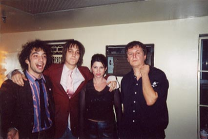

https://www.google.com/search?q=Guided+By+Voices+The+Strokes+Theater+of+the+Living+Arts,+Philadelphia,+PA,+US&safe=strict&client=firefox-b-1-ab&sa=X&biw=1920&bih=943&tbm=isch&source=iu&ictx=1&fir=NeIQJCRiIhEitM%253A%252CqGChOA3Qu2--5M%252C_&usg=__JNeINMG_G5m-9cM6eTS9QDwxMS4%3D&ved=0ahUKEwju67-z4f3aAhUE8YMKHZokBpEQ9QEITTAE#imgrc=NeIQJCRiIhEitM:
| Mon | Tue | Wed | Thurs | Fri | Sat | Sun |
|---|---|---|---|---|---|---|
| 1
The Strokes Shark |
2 | 3
…And You Will Know Us by the Trail The Strokes, | 4 | |||
| 5 | 6 | 7
The Strokes & Life Without Buildings | 8 | 9 | 10 | 11
The Strokes and Guided By Voices |
| 12
The Strokes and Guided By Voices | 13 | 14
The Strokes and Guided By Voices | 15 | 16
Guided By Voices The Strokes | 17
The Strokes and Guided By Voices | 18 |
| 19 | 20 | 21 | 22 | 23
The Strokes | 24
The Strokes, Doves, and The Last Broadcast | 25
Doves The Strokes |
| 26
The Strokes, Doves, and The Last Broadcast | 27
Doves, The Strokes, and The Last Broadcast | 28 |